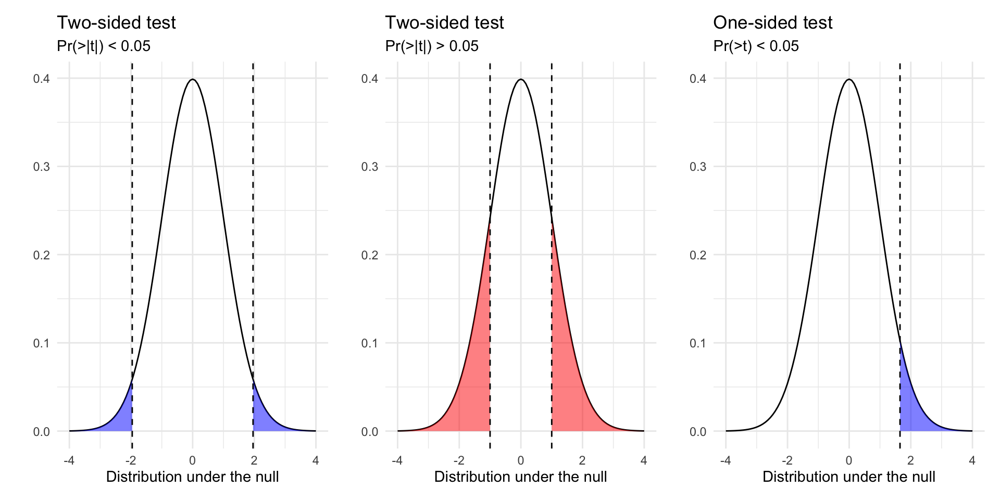
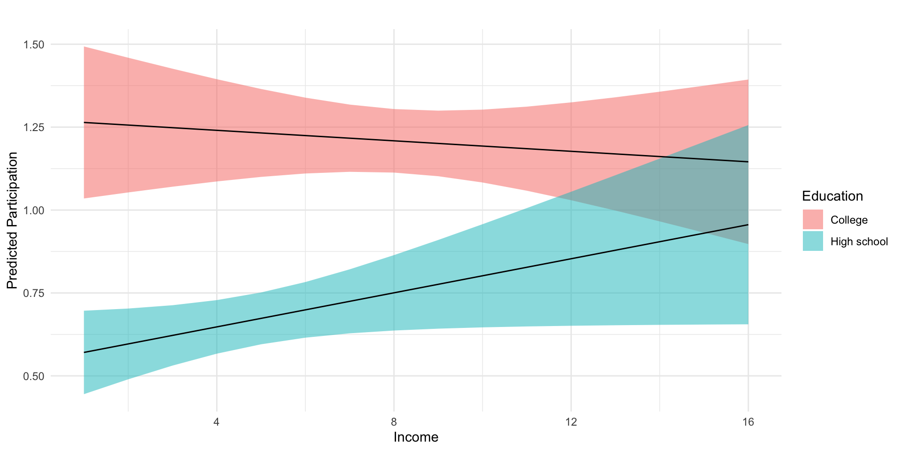

A sampling distribution is a theoretical distribution of estimates obtained in repeated sampling
What could have happened?
A standard error (SE) is the standard deviation of the sampling distribution
We can calculate SEs via simulation and analytically
We can use SEs to construct confidence intervals and conduct hypothesis tests allowing us to quantify uncertainty
Sampling distributions and standard errors
Populations and samples
Population: All the cases from which you could have sampled
Parameter: A quantity or quantities of interest often generically called \(\theta\) (“theta”). What we want to learn about our population
Sample: A (random) draw of observations from that population
Sample Size: The number of observations in your draw (without replacement)
Estimators, estimates, and statistics
Estimator: A rule for calculating an estimate of our parameter of interest.
Estimate: The value produced by some estimator for some parameter from some data. Often called \(\hat{\theta}\)
Unbiased estimators:\(E(\hat{\theta})=E(\theta)\) On average, the estimates produced by some estimator will be centered around the truth
Consistent estimates:\(\lim_{n\to \infty} \hat{\theta_N} = \theta\) As the sample size increases, the estimates from an estimator converge in probability to the parameter value
Statistic: A summary of the data (mean, regression coefficient, \(R^2\)). An estimator without a specified target of inference
Distrubtions and standard errors
Sampling Distribution: How some estimate would vary if you took repeated samples from the population
Standard Error: The standard deviation of the sampling distribution
Resampling Distribution: How some estimate would vary if you took repeated samples from your sample WITH REPLACEMENT
“Sampling from our sample, as the sample was sampled from the population.”
provide a way of quantifying uncertainty about estimates
describe a range of plausible values for an estimate
are a function of the standard error of the estimate, and the a critical value determined by \(\alpha\), which describes the degree of confidence we want
Figure 1 shows 3 confidences intervals for 3 samples of different sizes (N = 10, 30, 300). The CIs for N = 10 and N = 300, intervals contain the truth (include the population mean). By chance, the CI for N=30 falls outside of the truth.
Figure 2 shows that our confidence is about the property of the interval. Over repeated sampling, 95% of the intervals would contain the truth, 5% percent would not.
In any one sample, the population parameter either is or is not within the interval.
Figure 3, shows that while the width of the interval declines with the sample size, the coverage properties remains the same.
Interpreting confidence intervals
Confidence intervals give a range of values that are likely to include the true value of the parameter \(\theta\) with probability \((1-\alpha) \times 100\%\)
\(\alpha = 0.05\) corresponds to a “95-percent confidence interval”
Our “confidence” is about the interval
In repeated sampling, we expect that \((1-\alpha) \times 100\%\) of the intervals we construct would contain the truth.
For any one interval, the truth, \(\theta\), either falls within in the lower and upper bounds of the interval or it does not.
Hypothesis testing
What is a hypothesis test
A formal way of assessing statistical evidence. Combines
Deductive reasoning distribution of a test statistic, if the a null hypothesis were true
Inductive reasoning based on the test statistic we observed, how likely is it that we would observe it if the null were true?
What is a test statistic?
A way of summarizing data
difference of means
coefficients from a linear model
coefficients from a linear model divided by their standard errors
Different test statistics may be more or less appropriate depending on your data and questions.
What is a null hypothesis?
A statement about the world
Only interesting if we reject it
Would yield a distribution of test statistics under the null
Typically something like “X has no effect on Y” (Null = no effect)
Never accept the null can only reject
What is a p-value?
A p-value is a conditional probability summarizing the likelihood of observing a test statistic as far from our hypothesis or farther, if our hypothesis were true.

How do we do hypothesis testing?
Posit a hypothesis (e.g. \(\beta = 0\))
Calculate the test statistic (e.g. \((\hat{\beta}-\beta)/se_\beta\))
Derive the distribution of the test statistic under the null via simulation or asymptotic theory
Compare the test statistic to the distribution under the null
Calculate p-value (Two Sided vs One sided tests)
Reject or fail to reject/retain our hypothesis based on some threshold of statistical significance (e.g. p < 0.05)
Outcomes of hypothesis tests
Two conclusions from of a hypothesis test: we can reject or fail to reject a hypothesis test.
We never “accept” a hypothesis, since there are, in theory, an infinite number of other hypotheses we could have tested.
Our decision can produce four outcomes and two types of error:
Reject \(H_0\)
Fail to Reject \(H_0\)
\(H_0\) is true
False Positive
Correct!
\(H_0\) is false
Correct!
False Negative
Type 1 Errors: False Positive Rate (p < 0.05)
Type 2 Errors: False negative rate (1 - Power of test)
The estimate column are the regression coefficients, \(\beta\)
Recall, lm_robust() calculates these:
\[
\hat{\beta} = (X'X)^{-1}X'y
\]
Tip
\(\beta\)s describe substantive relationships between predictors (income, education) and the outcome (political participation)
coef(m1)
(Intercept) education income
0.311609712 0.166755964 0.007034253
X <-model.matrix(m1,data=df)y <-model.frame(m1)$dv_participationbetas <-solve(t(X)%*%X)%*%t(X)%*%ybetas
[,1]
(Intercept) 0.311609712
education 0.166755964
income 0.007034253
A unit increases in education is associated with about 0.16 more acts of political participation, while a unit increase in income is associated with 0.007 more acts of participation.
Note that both income and education are measured with ordinal scales
get_value_labels(df$educ)
No HS credential High school graduate Some college
1 2 3
2-year degree 4-year degree Post-grad
4 5 6
Such that it might be unreasonable to assume cardinality (going from a 1 to 2 is the same as going from a 3 to 4)
The main takeaway here is that for linear models, bootstrapped SEs and CIs are quite similar to those obtained via analytically (via math and asymptotic theory)
For common estimators and large samples, we’ll generally use analytic SEs (quicker)
For less common estimators (ratios of estimates), analytic estimates of the SEs may not exist. Bootstrapping will still provide valid SEs, provided we “sample from the sample, as the sample was drawn from the population”
The test statistic (“t-stat”) reported by lm() and lm_robust() is our observed coefficient, \(\hat{\beta}\) minus our hypothesized value \(\beta\) (e.g. 0), divided by the standard error of \(\hat{\beta}\).
\[t= \frac{\hat\beta-\beta}{\widehat{SE}_{\hat{\beta}}} \sim \text{Students's } t \text{ with } n-k \text{ degrees of freedom}\] Which follows a \(t\) distribution – like a Normal with “heavier tails” (e.g. more probability assigned to extreme values)
The p-value for the coefficient on education is less than 0.05, while the p-value for income is 0.50.
If there was no relationship between education and participation (\(H_0:\beta_2=0\)), it would be quite unlikely that we would observed a test statistic of 6.89 or larger.
Similarly, test statistics as larger or larger than 0.671 occurs quite frequently in a world where there is no relationship (\(H_0:\beta_3=0\)) between income and participation.
Thus we reject the null hypothesis for education, but fail to reject the null hypothesis for income in this model.
To help our interpretations we’ll produce plots of predicted values of participation, at varying levels of income and education.
# Fit modelm2 <-lm_robust(dv_participation ~ education*income, df)# Regression Tablem2_tab <-htmlreg( m2, include.ci = F,digits =3,stars =c(0.05, 0.10) )# Predicted values# Data frame of values we want to make predictions atpred_df <-expand_grid(income =sort(unique(df$income)),education =quantile(df$education, na.rm = T)[c(2,4)])# Combine model predictionspred_df <-cbind(pred_df, predict(m2, pred_df,interval ="confidence")$fit)# Plot predicted valuesfig_m2_pred <- pred_df %>%mutate(Education =ifelse(education ==2, "High school","College") ) %>%ggplot(aes(income, fit, group=Education))+geom_ribbon(aes(ymin = lwr, ymax = upr,fill = Education),alpha=.5)+geom_line()+theme_minimal()+labs(y ="Predicted Participation",x ="Income",title ="")
Statistical models
Model 1
(Intercept)
0.060
(0.151)
education
0.242**
(0.050)
income
0.048**
(0.024)
education:income
-0.011*
(0.006)
R2
0.042
Adj. R2
0.040
Num. obs.
1687
RMSE
1.286
**p < 0.05; *p < 0.1

Low income individuals with a college degree participate at significantly higher rates than individuals with a similar levels of income with only a high school diploma.
Alternatively, we might say that the college educated tend to participate at similar levels, regardless of their level of income, while income has a marginally positive relationship with participation for those without college degrees.
Note
Is this a causal relationship? What assumptions would we need to make a causal claim about the effects of education on participation?